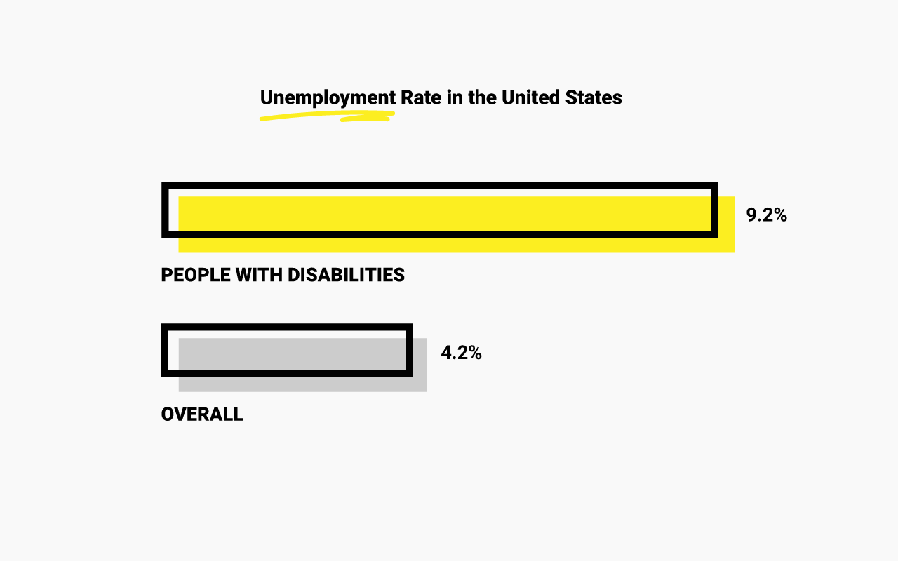
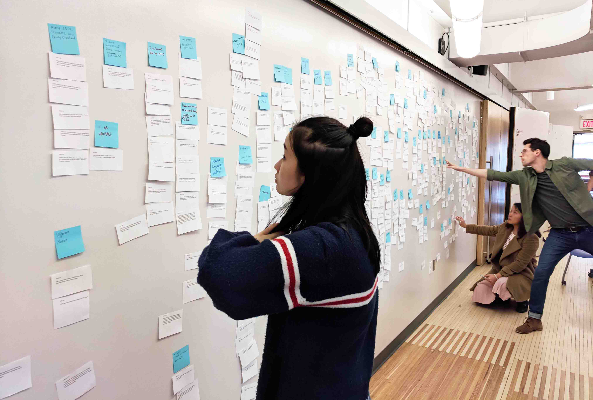
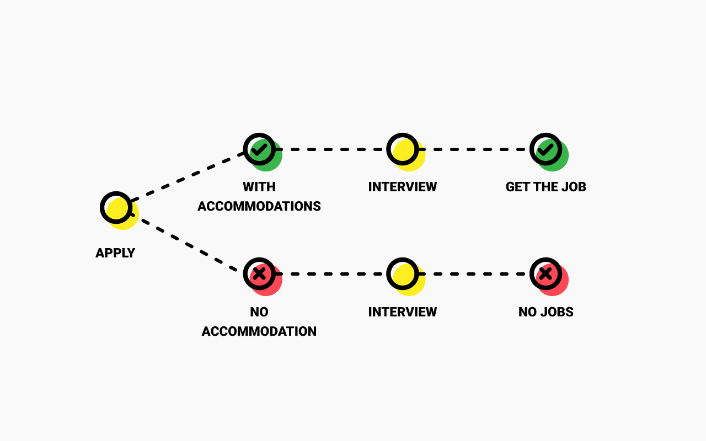
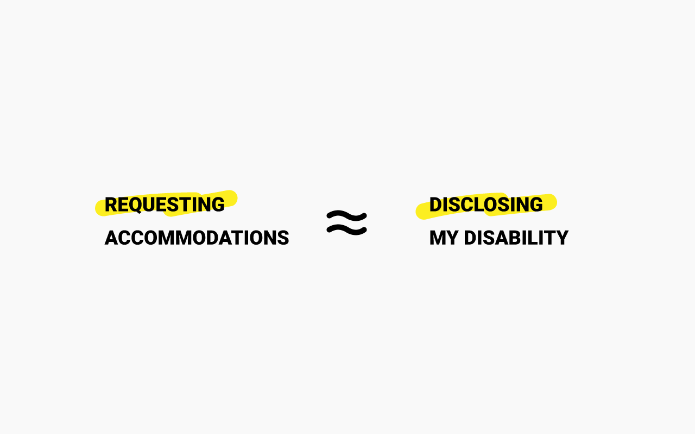
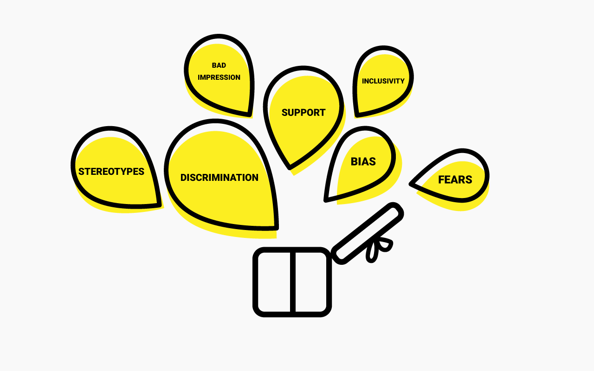
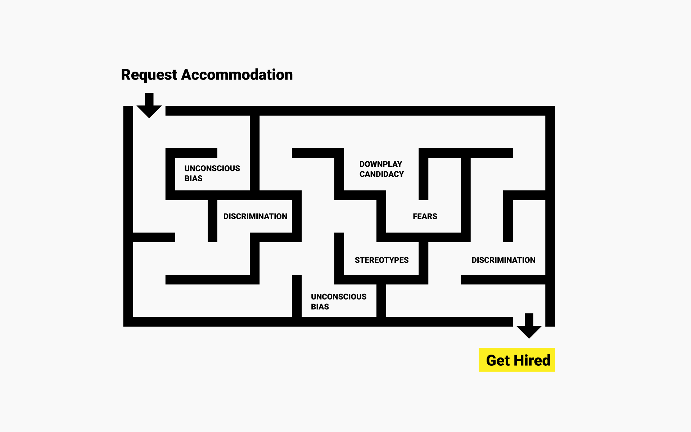

Design Challenge
To envision an accessible future of hiring at Bloomberg.
Getting a decent job is everyone’s dream including people with disabilities. However, the process has not made as easy for them as for their luckier counterparts. According to the statistics, the average employed rate of people with disabilities in the US is almost half as the figure of people without disabilities.
To combat this huge inequity, Bloomberg came to us in January 2018 with the vision of building a more accessible hiring and onboarding experience for people with disabilities to help them get hired and eventually thrive at Bloomberg.
Initial Research
Lacking accommodations is the biggest pain.
Our initial research phase last for around 5 month in which 5 of us interviewed and observed over 50 people with disabilities and stakeholders and collected over 1200 notes from the field. By synthesizing the notes into a condensed service blueprint, we spotted the breakdowns repetitively accumulated around the accommodation requesting flow.
* An accommodation is assistance or changes to a position or workplace that will enable an employee to do his or her job despite having a disability.
▸ Insight 1
“I am not getting the accommodations to perform.”
Just like we can’t live without our laptops, people with disabilities also need certain tools and assistance to accomplish tasks in the interview process. In the research, we heard dozens of users talked about their experience of not having the needed accommodation during their interviews process and ended up not getting the job.
▸ Insight 2
“It is showing my biggest flaws while trying to convince companies to hire me.”
After diving deeper into the domain, we soon realized that this is never a process problem. Its root cause, however, is highly embedded in people’s identity and self-esteem. No matter how the law talks about “requesting without disclosing”, there is basically no way to hide the disability after asking for the associated accommodation from recruiters.
▸ Insight 3
“It is scary like Pandora's box. I have no idea what will be triggered: supports or discrimination.”
In our research, we heard multiple stories about how people’s job applications got terminated soon after they disclose their need for accessible accommodation. The unpredictable consequences and the general stereotyping in the society brings fears to people with disabilities. Thus, many of them chose not to request and ended up failing the interviews.
Defining the Problem
How might we eliminate the fears by helping users make informed decisions of accommodation requests?
With all the three key main findings in mind, we realized that the biggest pain point of the process is the ambiguity centered around the decision making process. It is scary for candidates with disabilities to make up their mind because the consequences could be extremely harmful to their candidacy and even self-esteem. Although there isn’t really much we can do to directly shift the society’s misconception, we can help people with disabilities make more informed decisions and eliminate their fears along the way.
